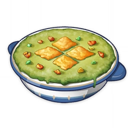

Nuestros Platos
Favoritos del dia
Una eleccion de lo mas pedido en el dia
.jpeg)
Nuestra seleccion de postres
El "Guiso Raro" es mucho más que una simple comida: es una aventura culinaria que te desafiará a expandir tus horizontes gastronómicos. Si eres un amante de la comida que busca nuevas emociones y está dispuesto a dejarse sorprender, este es el plato perfecto para ti. Ven y atrévete a probar algo fuera de lo común, algo que te transportará a un mundo de sabores inexplorados y te dejará deseando más.
1. Pulpo ahumado 2. Hojas de hibisco secas 3. Setas maitake 4. Fruta de la pasión fresca Estos ingredientes inusuales y sorprendentes se combinan para crear un "Guiso Raro" que desafía las expectativas y ofrece una experiencia gastronómica verdaderamente única.
🌟 ¡Bienvenido a nuestro mágico oasis culinario: "ExoticTaste"! 🌟 Sumérgete en un mundo de sabores y aromas que te transportarán a tierras lejanas y exóticas en cada bocado. En "ExoticTaste", hemos creado un espacio donde la aventura gastronómica cobra vida, y cada plato es una oportunidad para explorar las delicias culinarias de diversas culturas y rincones remotos del mundo. Nuestro restaurante está meticulosamente diseñado para cautivar tus sentidos desde el momento en que cruzas la puerta. Los cálidos colores, la iluminación tenue y la decoración artística te sumergen en un ambiente acogedor y misterioso, creando el escenario perfecto para tu experiencia culinaria única. Nuestro menú es un viaje de descubrimiento, donde cada platillo es cuidadosamente elaborado con ingredientes auténticos y exóticos que te harán sentir como si estuvieras explorando mercados locales en tierras lejanas. Desde la fusión audaz de sabores en nuestros platos principales hasta los tentadores postres inspirados en las tradiciones dulces de diferentes culturas, cada creación en nuestro menú es una obra de arte culinaria. Nuestro equipo de chefs apasionados y experimentados se dedica a reinventar y elevar los ingredientes exóticos a nuevas alturas de sabor. Cada plato es una sinfonía de texturas, colores y aromas que te llevarán en un viaje sensorial sin igual. Y para completar tu experiencia, nuestra carta de vinos y cócteles cuidadosamente seleccionados te ofrece la oportunidad de maridar tus platillos con bebidas igualmente emocionantes. En "ExoticTaste", no solo te invitamos a disfrutar de una comida, sino a sumergirte en una experiencia que despierta tus sentidos y alimenta tu curiosidad. Ya sea que seas un aventurero culinario experimentado o estés dispuesto a probar algo nuevo, nuestro restaurante exótico te espera con los brazos abiertos para ofrecerte un viaje culinario que nunca olvidarás. ¡Únete a nosotros en "ExoticTaste" y descubre un mundo de sabores que te harán anhelar regresar una y otra vez!🌟 ¡Bienvenido a nuestro mágico oasis culinario: "ExoticTaste"! 🌟 Sumérgete en un mundo de sabores y aromas que te transportarán a tierras lejanas y exóticas en cada bocado. En "ExoticTaste", hemos creado un espacio donde la aventura gastronómica cobra vida, y cada plato es una oportunidad para explorar las delicias culinarias de diversas culturas y rincones remotos del mundo. Nuestro restaurante está meticulosamente diseñado para cautivar tus sentidos desde el momento en que cruzas la puerta. Los cálidos colores, la iluminación tenue y la decoración artística te sumergen en un ambiente acogedor y misterioso, creando el escenario perfecto para tu experiencia culinaria única. Nuestro menú es un viaje de descubrimiento, donde cada platillo es cuidadosamente elaborado con ingredientes auténticos y exóticos que te harán sentir como si estuvieras explorando mercados locales en tierras lejanas. Desde la fusión audaz de sabores en nuestros platos principales hasta los tentadores postres inspirados en las tradiciones dulces de diferentes culturas, cada creación en nuestro menú es una obra de arte culinaria. Nuestro equipo de chefs apasionados y experimentados se dedica a reinventar y elevar los ingredientes exóticos a nuevas alturas de sabor. Cada plato es una sinfonía de texturas, colores y aromas que te llevarán en un viaje sensorial sin igual. Y para completar tu experiencia, nuestra carta de vinos y cócteles cuidadosamente seleccionados te ofrece la oportunidad de maridar tus platillos con bebidas igualmente emocionantes. En "ExoticTaste", no solo te invitamos a disfrutar de una comida, sino a sumergirte en una experiencia que despierta tus sentidos y alimenta tu curiosidad. Ya sea que seas un aventurero culinario experimentado o estés dispuesto a probar algo nuevo, nuestro restaurante exótico te espera con los brazos abiertos para ofrecerte un viaje culinario que nunca olvidarás. ¡Únete a nosotros en "ExoticTaste" y descubre un mundo de sabores que te harán anhelar regresar una y otra vez!🌟 ¡Bienvenido a nuestro mágico oasis culinario: "ExoticTaste"! 🌟 Sumérgete en un mundo de sabores y aromas que te transportarán a tierras lejanas y exóticas en cada bocado. En "ExoticTaste", hemos creado un espacio donde la aventura gastronómica cobra vida, y cada plato es una oportunidad para explorar las delicias culinarias de diversas culturas y rincones remotos del mundo. Nuestro restaurante está meticulosamente diseñado para cautivar tus sentidos desde el momento en que cruzas la puerta. Los cálidos colores, la iluminación tenue y la decoración artística te sumergen en un ambiente acogedor y misterioso, creando el escenario perfecto para tu experiencia culinaria única. Nuestro menú es un viaje de descubrimiento, donde cada platillo es cuidadosamente elaborado con ingredientes auténticos y exóticos que te harán sentir como si estuvieras explorando mercados locales en tierras lejanas. Desde la fusión audaz de sabores en nuestros platos principales hasta los tentadores postres inspirados en las tradiciones dulces de diferentes culturas, cada creación en nuestro menú es una obra de arte culinaria. Nuestro equipo de chefs apasionados y experimentados se dedica a reinventar y elevar los ingredientes exóticos a nuevas alturas de sabor. Cada plato es una sinfonía de texturas, colores y aromas que te llevarán en un viaje sensorial sin igual. Y para completar tu experiencia, nuestra carta de vinos y cócteles cuidadosamente seleccionados te ofrece la oportunidad de maridar tus platillos con bebidas igualmente emocionantes. En "ExoticTaste", no solo te invitamos a disfrutar de una comida, sino a sumergirte en una experiencia que despierta tus sentidos y alimenta tu curiosidad. Ya sea que seas un aventurero culinario experimentado o estés dispuesto a probar algo nuevo, nuestro restaurante exótico te espera con los brazos abiertos para ofrecerte un viaje culinario que nunca olvidarás. ¡Únete a nosotros en "ExoticTaste" y descubre un mundo de sabores que te harán anhelar regresar una y otra vez!
/div>''